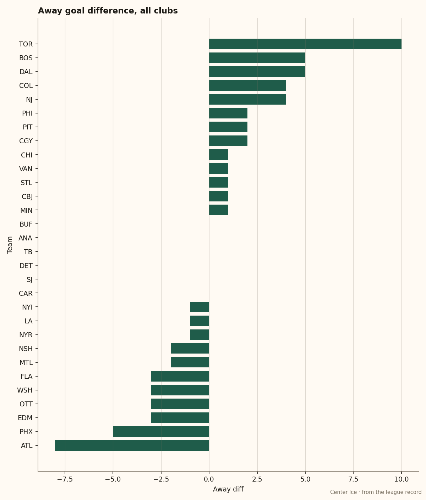
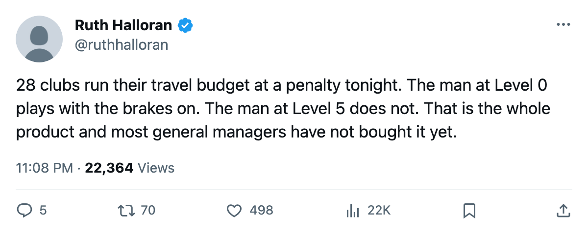

The Road Tax: 28 Clubs Lose up to 7 Attribute Points a Night Away, and Only 2 Have Paid to Stop It
Boston has not played a home game yet. They are 4-1-1 on the road, and they are one of two clubs that built the travel room to its ceiling.
 Ruth HalloranBusiness of hockey · The Building
Ruth HalloranBusiness of hockey · The Building
 Boston Bruins have played 6 games this season. Every one has been on the road. They are 4-1-1, with a +5 goal differential, and they are one of only two clubs in the league that have built the travel room to Level 5. The other is
Boston Bruins have played 6 games this season. Every one has been on the road. They are 4-1-1, with a +5 goal differential, and they are one of only two clubs in the league that have built the travel room to Level 5. The other is  Washington Capitals, and that one is not working.
Washington Capitals, and that one is not working.
The travel room is the one facility track that decides what a man feels on a night away. Four of the ten upgrade tracks are switched off in this build; travel is live. The tuning table gives it a modifier on every attribute: at Level 5 a man carries +1 on the road, at Level 4 he carries nothing, and at Level 0 he carries 6 points below where he would play in his own building. That gap from floor to ceiling is 7 attribute points on every attribute, every road night. Twenty-eight clubs sit at Level 2 or below and carry a penalty each time they leave home.

The ceiling does not guarantee the floor
[BOS]] and [WSH]] are the only two clubs at Level 5 travel. [BOS]] are 4-1-1 on the road with the best differential in the league. [WSH]] are 1-2-1 with a differential of -3. Same room, different building: [WSH]] run their practice rink at Level 0, the floor of that track, which cuts their men by 6 points at home. Their live facility sum is -12, joint 9th worst in the league. [BOS]] carry a practice room at Level 1 and a live sum of -14. [BOS]] have simply not played a home game yet, which means the only facility effect their players have felt all season is the one that helps them on the road.
[WSH]]'s general manager [Shawn Holliday]] sits 9th on the league's prestige table at 814. His payroll is $56.89M, his revenue $36.48M, his profit $26.75M. He funded the room that moves on the road and left the one that moves at home on the floor.
The floor costs 7 points a night
Five clubs run travel at Level 0, the worst budget in the league, and a man in those rooms plays 7 attribute points below what a Boston Bruins man plays on the same night. Those five clubs are  Detroit Red Wings,
Detroit Red Wings,  Los Angeles Kings,
Los Angeles Kings,  Montreal Canadiens,
Montreal Canadiens,  Phoenix Coyotes and
Phoenix Coyotes and  Atlanta Thrashers. [ATL]] are 0-3 on the road with a -8 differential. [PHX]] are 1-4 with -5. [MTL]] are 0-2 with -2.
Atlanta Thrashers. [ATL]] are 0-3 on the road with a -8 differential. [PHX]] are 1-4 with -5. [MTL]] are 0-2 with -2.
The exception is [DET]], who are 2-1-1 on the road with a differential of 0 despite running the worst travel budget in the league. They also run the best practice rink in the league at Level 5, which is what keeps their live sum at -13 rather than lower. On the road that practice room does nothing, and [DET]] are winning away games with no facility help at all.
[PHX]]'s [[Dan Knights]] has the most complete picture of failure on the table. His club is 0-5-0, dead last in the league, with 2 points from 6 games. They run travel at Level 0, practice at Level 1, and equipment at Level 2. Their live sum is -16. They are paying $55.41M in payroll and getting $27.13M back in revenue, the lowest in the league. A -16 facility sum means every one of their men plays, on a neutral estimate, with attributes 2 to 4 points below what they would carry at par, in either building, every night. At 0-5 that compound is starting to show on the scoresheet.
The money is moving, slowly
Twelve levels of travel room have been raised across 9 clubs since the record opened in December:  Toronto Maple Leafs twice, [WSH]] twice,
Toronto Maple Leafs twice, [WSH]] twice,  Minnesota Wild by 2 in a single entry, and
Minnesota Wild by 2 in a single entry, and  New Jersey Devils,
New Jersey Devils,  Columbus Blue Jackets,
Columbus Blue Jackets,  Buffalo Sabres,
Buffalo Sabres,  St. Louis Blues, [PHI]] and [TB]] once each. Eleven of those 12 happened in the May wave. The twelfth was [TB]] this fortnight, the only club to move travel during the season itself.
St. Louis Blues, [PHI]] and [TB]] once each. Eleven of those 12 happened in the May wave. The twelfth was [TB]] this fortnight, the only club to move travel during the season itself.
Stefaan Bullard of [MTL]] told The Tunnel's Marcus Bell this month what comes next. "Travel is next. It's next because we spend half the year on a plane, and right now we're taking that penalty every road trip. Every single one." [MTL]] sit at Level 0 travel, a modifier of -6, with [DET]] and three others; they are 0-2 on the road and have raised nothing since May.
Detroit Red Wings spend $61.19M on payroll and sit at the same Level 0 travel budget as [ATL]], who spend $38.53M. [DET]]'s general manager [Tobe Wong]] chose to build his practice room to the ceiling instead. It works at home: he is 1-0-1 there. It does nothing on a road trip, where his men play 6 points below their ratings every night. He is 2-1-1 away regardless, which makes him the club the tuning table says should be losing and is not.
